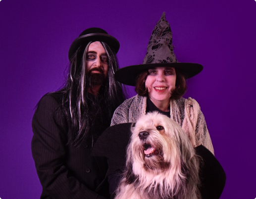
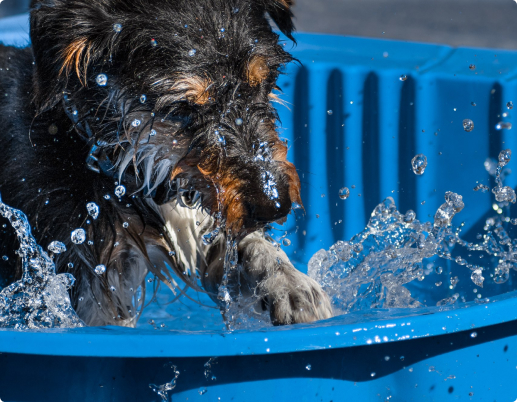
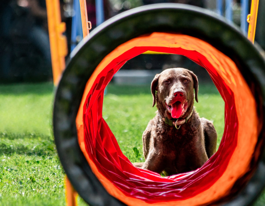

mir bei WhatsApp!
Can sein
Alltägliche Momente die zu emotionalen Erinnerungen werden
Eure Haustiere sind stets die Stars meiner Aufnahmen, unabhängig davon, wo und wann wir uns treffen. Stilisierte Kreativ- oder Porträtaufnahmen mache ich in meinem Studio in Werdohl. Ich kann aber auch zu euch mit meinem mobilen Fotostudio kommen. Möchtet ihr Fotos eures vierbeinigen Freundes in der Natur?
Ich besuche gerne euren Lieblingsplatz, um euren Liebling in seiner natürlichen Umgebung zu fotografieren. Seid ihr Teilnehmer oder Organisator eines Events mit Haustieren? Ich bin gerne euer persönlicher Fotojournalist, der die wichtigsten Momente der Veranstaltung einfängt.
Was kostet
-
Mehr sehen
Studio
Mein Fotostudio ist wie ein zauberhaftes Theater, in dem jeder seine Rolle spielen kann! Ihre geliebten Tiere sind die Hauptdarsteller, Sie sind die begeisterten Zuschauer, oder vielleicht ist Ihnen eine Nebenrolle zugedacht. Und ich bin der Regisseur dieses Theaters. Es spielt keine Rolle, wer von uns die Handlung entworfen hat, welche Rollen wir spielen oder welches Requisit auf der Bühne steht, denn jede unserer Aufführungen verdient es, für immer in Erinnerung zu bleiben. -
Mehr sehen
Momente
Jeder Moment im Tierleben birgt eine einzigartige Geschichte. Ich fotografiere eure Tiere dort, wo sie ganz sie selbst sind – in ihrer natürlichen Umgebung. Mit einem feinen Gespür für den richtigen Moment und einem Auge für das Detail, fange ich die Einzigartigkeit und die Persönlichkeit jedes Tieres ein. Ob überraschendes Spiel im Garten oder ausgelassene Freude beim Spaziergang, ich bin bereit, eure Geschichten überallhin zu folgen. -
Mehr sehen
Reportage
Jedes Event ist voll einzigartiger Momente – von Aufregung bis zu Überraschungen. Meine Mission ist es sondern die Geschichte Ihres Events zu erzählen - die Atmosphäre, die Emotionen und die vielen kleinen Details einzufangen, die zusammenkommen, um Ihre Veranstaltung unvergesslich zu machen. Mit einem aufmerksamen Blick für die besonderen Interaktionen zwischen Tieren und Menschen schaffe ich eine lebendige, emotionale Erzählung Ihres besonderen Tages.
Was tun
Wenn es um ein Fotoshooting mit Hunden geht, kommen viele Fragen auf. Das ist verständlich – schließlich willst Du wissen, was Deine Fellnase und Dich erwartet. Die wichtigsten Antworten habe ich Dir in meinen Hunde Fotoshooting FAQ zusammengestellt: Hier findest Du viele Informationen rund um die DOGGYFRAMES Hundeshootings. Du möchtest etwas anderes wissen? Dann schreib mir doch einfach. Ich lasse Dich mit Deinen Fragen nicht allein.

Mittun
HUNDEFOTOSHOOTING „CITY DOGS“
ZEITLOS.KLASSISCH.ELEGANT. Eine Stadt – tausende Möglichkeiten um Hunde toll ins Szene zu setzen. Die Altstadt Graz bietet zahlreiche Motive um unsere Fellnasen mal von einer ganz anderer Seite zu zeigen. Gemeinsam spazieren wir durch die Grazer Altstadt und ich lichte deine Fellnase an den unterschiedlichen Plätzen ab. Voraussetzung: dein Hund ist verträglich mit anderen Hunden und fühlt sich auch im städtischen Umfeld wohl.